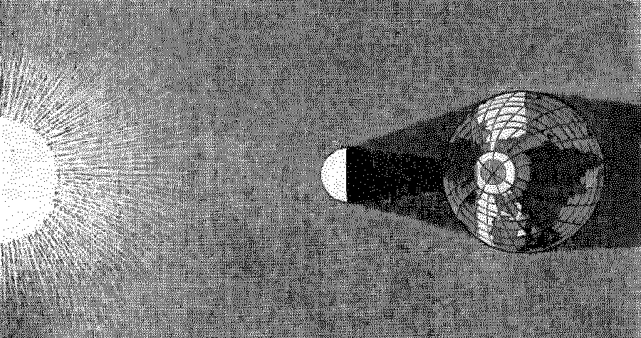

Solar Protocol Manifesto
Solar Protocol
2021

The Solar Protocol network reconfigures internet protocols using a kind of natural rather than artificial intelligence. The network routes internet traffic according to the logic of the sun, where page requests are sent to whichever server is enjoying the most sunlight at the time. We are working with people around the world who have built and installed servers that host this site alongside their own web content. When their server becomes the active node of the network, their online materials (if any) will soon become visible on this site.
If intelligence is the capacity to synthesize knowledge as logic and apply that logic to make decisions, then the Solar Protocol platform relies on an intelligence that emerges from earthly dynamics: specifically that of the sun’s interaction with the Earth. Our lives have always been directed by a range of natural logics that emerge from the intermittent dynamics of our shared environment. Weather, seasons, tides and atmospheric conditions all dictate our behavior, enabling and constraining our movements, food production and cultures. Solar Protocol uses these logics to automate decisions about how the network operates and what content is shown at different times of the day. How can we learn or relearn to design with natural intelligence?
The present day imagination for the internet has been enabled by an energy regime that relies on lethal fossil fuels. And the result? An online culture that valorizes speed, self expression through ever larger media and data-driven intelligence that is requiring more and more energy. Machine learning for example, requires enormous datasets typically collected through private efforts in online digital surveillance that collect every click, keypress, view and page scroll you might make. This data is then used to train models used to automate decisions about what content to show you. These energy hungry technologies are only made possible by extractive energy systems and labor practices.
In response and by working within natural limitations, we have deliberately chosen not to use large assets nor energy-intensive tracking technologies on this website. 1 A solar-powered web could reduce the opportunity for these kinds of surveillance and data-driven practices and the business models that go with them, something that is likely to have desirable political effects. As Timothy Mitchel points out in Carbon Democracy, different energy regimes create different political possibilities. 2
Solar-powered technologies catalyze a need for energy-centered design where the energetic dimension of cultural production is centered. On a solar-powered server, it is advantageous to minimize the amount of data being transmitted and it is therefore desirable to reduce the size of the media published. The intermittency of solar energy production also produces environmentally programmed downtime, where one’s server might sleep at night, or for the long evenings in the winter, demanding that you stop working and focus your attention elsewhere.
Energy-centered design is also about accountability. In building this website, we have attempted to do the computation work required to generate the visualizations on the server-side, rather than by using Javascript in the client’s browser. In other words, our servers do the heavy lifting as opposed to your computer. In this way, we are assured that these computational cycles are powered by solar rather than fossil fuels. This inverts a capitalist logic that incentivizes us to export costs to someone else somewhere else, a drive that has produced concurrent ecological crises. 3 Instead, we call for new forms of cultural production that embody a politics of accountability.
1. This approach was used by the Solar Powered Website published by Low Tech Magazine (2019) and we have taken much inspiration from this groundbreaking project.
2. See Timothy Mitchell’s book, Carbon democracy: Political power in the age of oil (2011), that discusses the political consequences of different energy systems.
3. Joana Moll's Hidden Life of an Amazon User demonstrates this through the case study of buying Jeff Bezos' book from the Amazon website. In this project she audits the eyewatering amount of computational work and energy expenditure that is outsourced to a user's computer by the Amazon website (presumably in order to track their behaviors and show them 'relevant' ads).